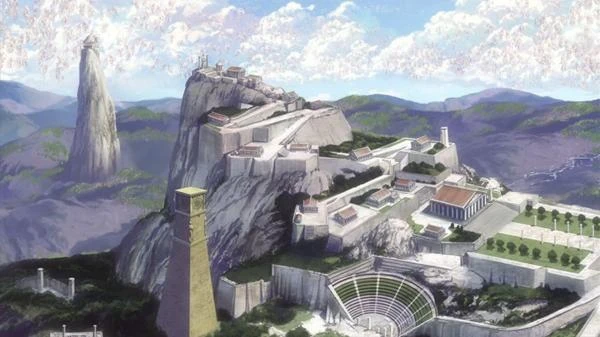

Bem-vindo ao Santuário de Atena
Aqui é o lugar onde vocês saberão as informações sobre os valorosos guerreiros de Athena. Guerreiros que por gerações defenderam a humanidade contra as forças de deuses vingativos que queriam destruir a raça humana. Aqui vocês encontrarão a informação sobre as guerras antigas travadas na era mitológica, e sobre quem são os guerreiros de Athena conhecidos como cavaleiros.